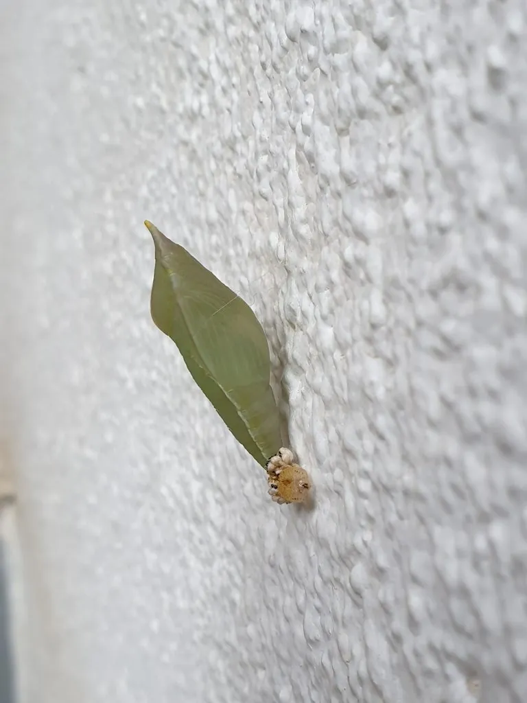

昆虫 · 动物界
迁粉蝶 Catopsilia pomona

具有长距离迁飞习性的粉蝶，成虫有黄、白两种色型，常在热带地区成群迁飞，幼虫取食决明等豆科植物。
- 分类
- 门节肢动物门纲昆虫纲目鳞翅目科粉蝶科属迁粉蝶属
- 栖息环境
- 热带和亚热带林缘、灌丛、路旁与豆科植物附近
- 地理分布
- 中国南方、东南亚、印度和澳大利亚北部
- 保护级别
- 暂无评估
物种志
迁粉蝶翅展约 6–7 cm，成虫有黄色型和白色型，翅面中央常有半透明斑，翅脉细密，雌蝶边缘和翅基带黑褐色。体色与季节型有关，旱季和雨季出现的个体外观不同，黄色的深浅也有差异。
它有明显的迁飞行为，常成群沿固定方向飞行数百千米，在东南亚和澳大利亚是著名的迁徙蝴蝶之一。幼虫取食决明、黄槐等豆科植物叶片，身体绿色带黄色纵纹；成虫访花吸蜜。迁粉蝶一年发生多代，分布在中国南方、东南亚、印度和澳大利亚北部，种群数量随季节明显波动。在澳大利亚北部，它们常追随雨季向北迁移。迁飞有助于它寻找新的寄主和繁殖地，也使它在气候变化的背景下不断扩大分布区。
形态与习性
- 食性幼虫取食决明、黄槐等豆科植物叶片
- 翅展约 6–7 cm
- 色型成虫有黄色型和白色型，随季节变化
- 迁飞常成群沿固定方向迁飞数百千米
- 生活史一年发生多代，热带地区全年可见
- 习性成虫访花吸蜜，飞行较快
趣味知识
- 迁粉蝶有黄色和白色两种色型，常被误认为两个物种。
- 它们在东南亚会成群迁飞，场面十分壮观。
- 雨季和旱季羽化的成虫外观往往不同，称为季节型。